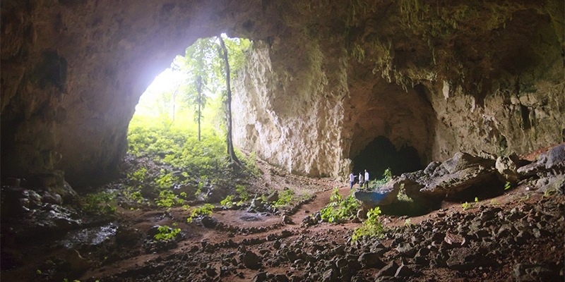
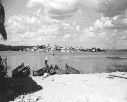
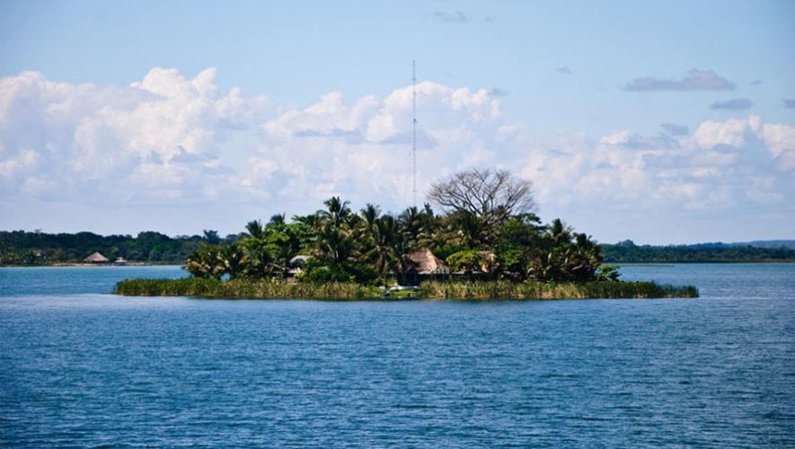

-
Sitios arqueológicos y turísticos
-
Grutas de Nooch Naj Cultunich: Se encuentran en la Aldea La Cobanerita. Estas grutas fueron exploradas y descubiertas públicamente en el año de 1971, por un campesino que era originario de la aldea. Los integrantes de la Corporación Municipal de ese entonces, decidieron ir a explorar las grutas, encontrándolas totalmente depredadas. Los integrantes de la corporación se asombraron al ver la enorme entrada de piedra y el tamaño de la primera gruta. Con la ayuda de un residente de San José, Petén, que era conocedor del Idioma Maya-Itzaj, bautizaron las cinco grutas que estaban en los cerros, con el nombre de "Grutas de Nooch Naj Cultunich" que significa en castellano (según el traductor): Casa Grande de Adoración de Piedra.

-
Sitio arqueológico Sonohuits: Este sitio arqueológico se encuentra en el centro de la Aldea La Cobanerita, a una distancia aproximada de 24 km de la cabecera municipal. Gracias al apoyo y seguridad que le brindó al sitio turístico la institución del gobierno llamada FYDEP (institución ya desaparecida) se previno que unos colonos que vivían en esa jurisdicción lo desaparecieran sin importarles los vestigios mayas que se encontraban allí. Cuando se restauró este sitio turístico, nunca se imaginó que se convertiría en una atracción turística, máxime que contiene el arroyo Sonohuits que serpentea el lugar. El arroyo contiene agua fresca y cristalina bajo la exuberante vegetación. Dicho arroyo al aproximarse al lago se le da el nombre de Candelaria.

-
Balneario El Pedregal: Es un centro turístico conformado por una playa, en Semana Santa es visitado por una multitud de personas de distintos lugares de la región para disfrutar de su playa y de la alegría de compartir en familia. Es un centro turístico recreativo público conformado por una playa en donde centenares de bañistas mitiga el cálido ambiente en época veraniega. Se encuentra ubicado en la zona 5 de San Benito, Petén, Guatemala.
Se clasifica como un parque local, posee una extensión de 9,012 metros cuadrados. En el interior de sus instalaciones se realizan diversidades de actividades de tipo recreativas. Es un terreno plano cuenta con árboles generadores de sombra con área de parque.
.jfif)
-
Sitio Arqueológico Colonia Itzá: Se encuentra ubicado a orillas de La Colonia Itzá, por eso es llamado así. Es un sitio utilizado con fines de investigación debido a los montículos que allí se encuentran, y está a cargo de los trabajadores del Instituto de Antropología e Historia (IDAEH).

-
Islote Santa Bárbara: Es un islote ubicado a pocos metros del primer barrio que se fundó en San Benito, el barrio «La Ermita». En esta isleta funciona Radio Petén desde 1993. La Isleta Santa Bárbara se encuentra en jurisdicción de Flores Petén, conforme a los límites establecidos por el Registro de Información Catastral, y está ubicado aproximadamente a cien metros de la orilla de San Benito. En 1940 el jefe político Oscar Peralta la convirtió en parque con plantas ornamentales; a él se le atribuye la construcción de un kiosco en donde se celebraban conciertos dominicales amenizados por la banda de música civil departamental. En la isla existe un museo de vestigios arqueológicos mayas que ha adquirido con el fin de evitar que sean llevados a otros países y se han registrado en el inventario del Instituto Guatemalteco de Antropología e Historia.
